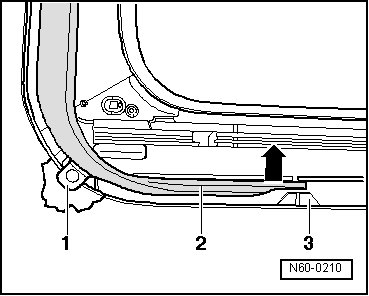

Sunroof with Solar Panel
Sunroof with Solar Panel
Wind Deflector
- Open the sunroof completely.
- Press the wind deflector - 2 - on both sides toward the center of the vehicle - arrow - and out of the mount - 3 -.

- Remove wind deflector with height stop - 1 - under roof toward rear.